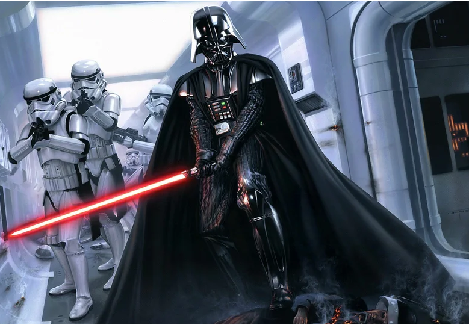
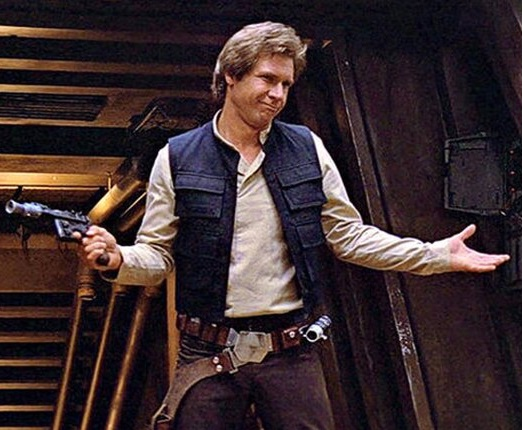
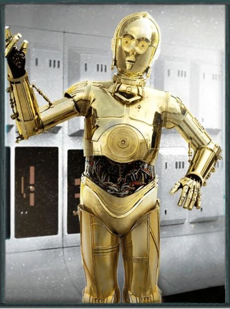

Люк Скайуокер
Люк Скайуокер против Тёмных штурмовиков.
«Звёздные войны» славятся своими запоминающимися персонажами, каждый из которых имеет уникальную историю и черты. Джедаи, ситхи, контрабандисты, дроиды и другие герои стали символами борьбы, надежды и приключений.
Люк Скайуокер, чувствительный к Силе человек мужского пола, был легендарным мастером-джедаем, сражавшимся в Галактической гражданской войне во время правления Галактической Империи. Вместе со своими товарищами, принцессой Леей Органой и генералом Ханом Соло, Скайуокер служил революционером на стороне Альянса за восстановление Республики — организации, стремившейся к падению Галактической Империи и восстановлению демократии. После войны Скайуокер стал живой легендой и запомнился как один из величайших джедаев в истории галактики.
Люк Скайуокер против Тёмных штурмовиков.
Дарт Вейдер (в прошлом – Энакин Скайуокер) — культовый персонаж во вселенной «Звёздных войн». Он был могущественным джедаем, но, поддавшись тёмной стороне Силы, стал ситхом и правой рукой Императора Палпатина. Характеризуется зловещей чёрной бронёй, маской с дыхательным аппаратом и грозным голосом. Будучи талантливым пилотом и мастером владения световым мечом, Вейдер известен своей жестокостью и непреклонностью. Внутри него, однако, остаётся конфликт между добром и злом, что приводит к его искуплению в финале саги.
Храбрая и умная лидер Повстанческого Альянса, дочь Падме Амидалы и Энакина Скайуокера, а также сестра Люка Скайуокера. Обладает сильным характером, острым умом и природным лидерством. Лея сыграла ключевую роль в борьбе против Галактической Империи, сохранив данные о Звезде Смерти. Её смелость, преданность делу свободы и способность вдохновлять делают её одной из центральных фигур саги.
Бесстрашный, но циничный контрабандист, который позже становится героем Повстанческого Альянса. Пилот знаменитого космического корабля «Тысячелетний сокол» и напарник верного вуки Чубакки. Сначала руководствуется личной выгодой, но дружба с Люком, Лея и другие события раскрывают его преданность делу и смелость. Его дерзкий шарм, чувство юмора и решимость делают его одним из самых любимых персонажей.
Компактный, но невероятно полезный астромеханический дроид. Р2-Д2 обладает остроумным характером и бесстрашно помогает своим друзьям, часто спасая их из опасных ситуаций. Он был свидетелем ключевых событий в истории галактики, начиная с Войн Клонов. Дроид известен своим мастерством в ремонте, навигации и взломе систем, а также крепкой связью с C-3PO.
Человекообразный протокольный дроид, созданный Энакином Скайуокером. C-3PO — мастер этикета и перевода, владеющий миллионами языков. Несмотря на его склонность к излишнему беспокойству и болтливости, он остаётся верным спутником и часто вносит неожиданный вклад в успех миссий. Его взаимодействия с Р2-Д2 добавляют юмора в сагу.
«Я твой отец» — одна из самых известных фраз в истории кино.
Немногие фильмы могут похвастаться такими знаковыми моментами и фразами, как: